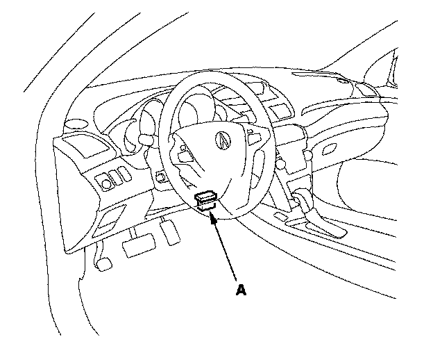

Idle Speed: Testing and Inspection
Idle Speed InspectionNOTE:
- Before checking the idle speed, check these items:
- The malfunction indicator lamp (MIL) has not been reported on, and there are no DTCs.
- Ignition timing
- Spark plugs
- Air cleaner
- PCV system
- Apply the parking brake.
1. Disconnect the evaporative emission (EVAP) canister purge valve connector.

2. Connect the HDS to the data link connector (DLC) (A) located under the driver's side of the dashboard.
3. Turn the ignition switch ON (II).
4. Make sure the HDS communicates with the PCM and other vehicle systems. If it does not, go to the DLC circuit troubleshooting. Testing and Inspection
5. Start the engine. Hold the engine speed at 3,000 rpm without load (in Park or neutral) until the radiator fan comes on, then let it idle.
6. Check the idle speed without load conditions: headlights, blower fan, radiator fan, and air conditioner off.
Idle speed should be:
710±50 rpm (in Park or neutral)
7. Let the engine idle for 1 minute with high electric load (A/C switch ON, temperature set to max cool, blower fan on high, and headlights on high beam).
Idle speed should be:
710±50 rpm (in Park or neutral)
NOTE: If the idle speed is not within specification, do the PCM idle learn procedure. If the idle speed is still not within specification, go to symptom troubleshooting.
8. Reconnect the EVAP canister purge valve connector.